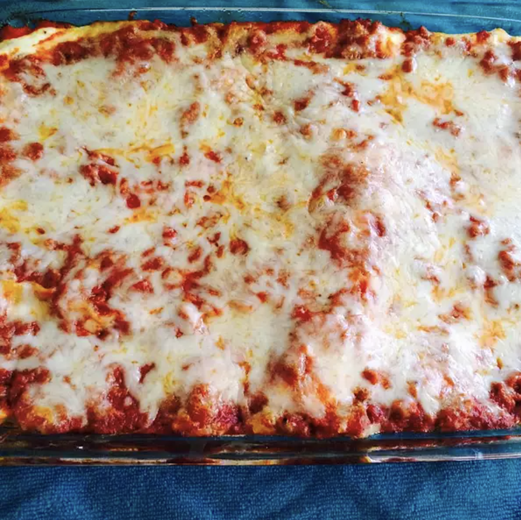

Easy Lasagna III

A tasty and simple to create dish
Ingredients
- 10 ounces lasagna noodles
- 1 1/2 pounds lean groud beef
- 3 cups cottage cheese
- 2 eggs
- 1 teaspoon garlic powder
- 2 tablespoons dried parsley
- sand and pepper to taste
- 1 can tomato paste
- 2 cans tomato sauce
Steps
- Preheat oven to 375 degress F
- Bring a large pot of lightly salted water to a boil. Add lasagna noodles and cook for 8 to 10 minutes or until aldente;drain.
- In a skillet, brown ground beef. Using a fork, mix cottage cheese, eggs, garlic powder, parsley, salt and pepper. In a seperate bown combine tomato paste and tomato sauce.
- In a 9x13 inch baking pan, layer noodles, ground beef, tomato sauce mixture and cottage cheese mixture. Two layers of each will fit. Cover with tin foil and bake for 30 minutes. Remove tin foil the last 8 minutes of baking time.